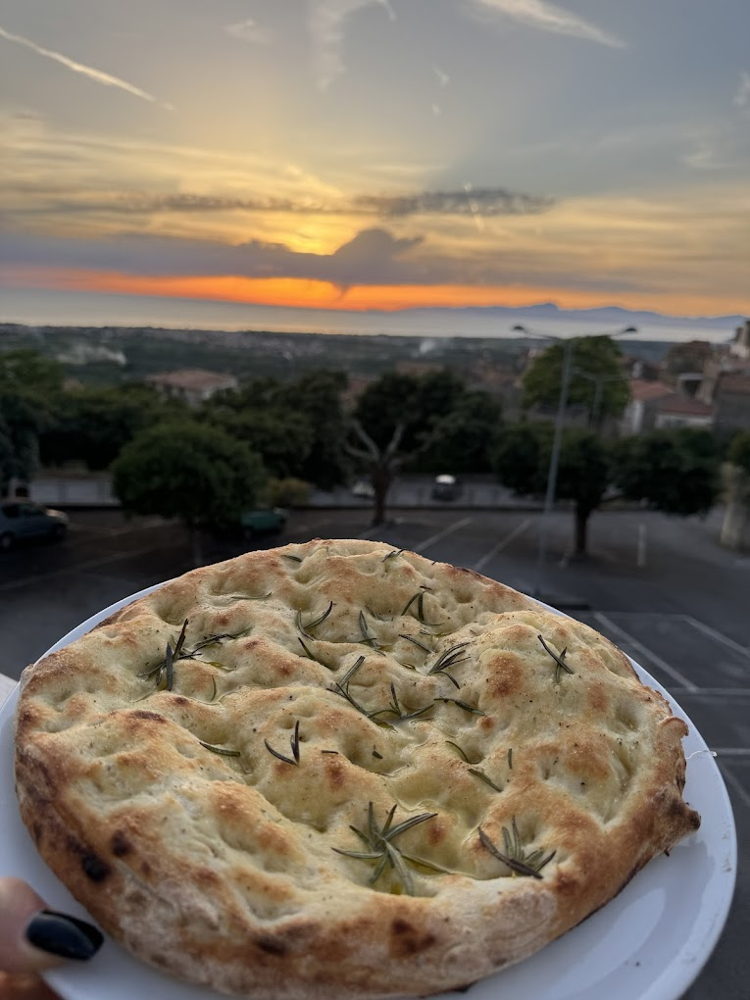
Santa Maria del Cedro · Calabria
“pizza, sapuri e cori”
Dal dialetto calabrese: pizza, sapori e cuori. Si sale al tramonto, per una sera.
Giaguá
Giaguá sta su un'altura sopra Santa Maria del Cedro: ci si sale apposta. Pizza canotto a legna, ingredienti del territorio e una terrazza affacciata sulla Valle del Cedro, sul mare e sui tramonti. Due, tre ore. La cena è solo l'inizio.
Pilastro I · La Vista
Terrazza panoramica aperta sulla Valle del Cedro, sul mare e sulle montagne. Il sole cala mentre ceni: il cielo passa dall'oro al pastello, si accendono i lampioni.
Non siamo in centro — ed è esattamente il punto. Giaguá è una meta: ci si arriva per la serata, non per caso.
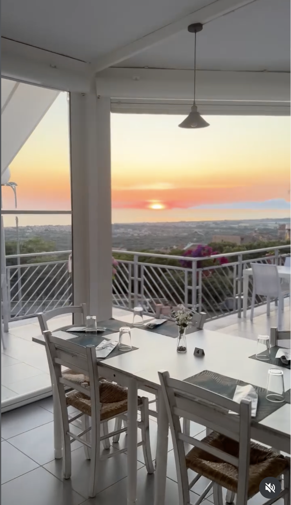
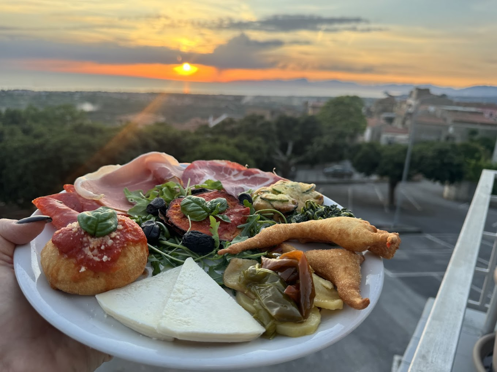
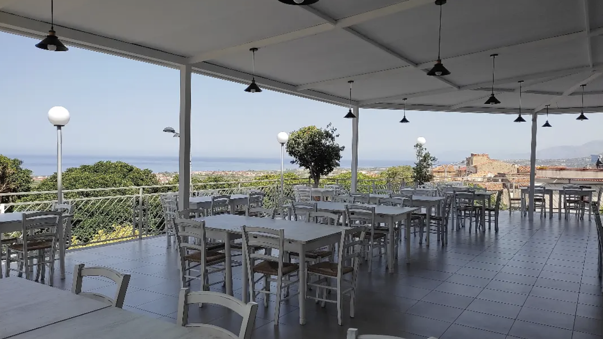
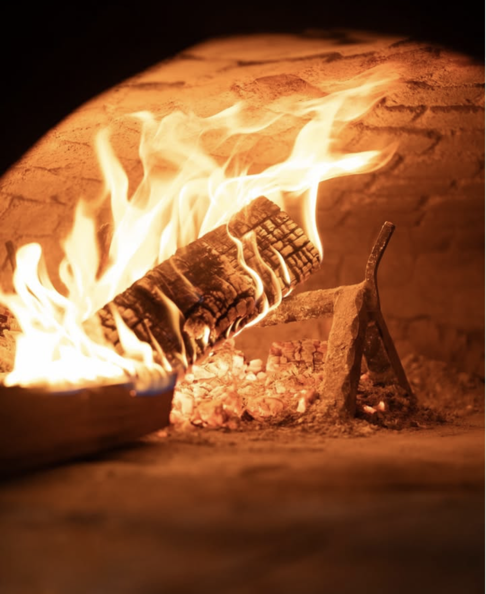
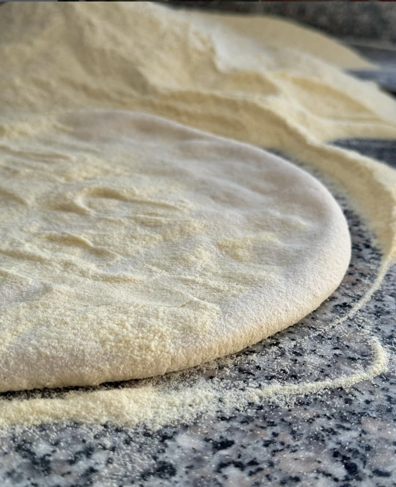
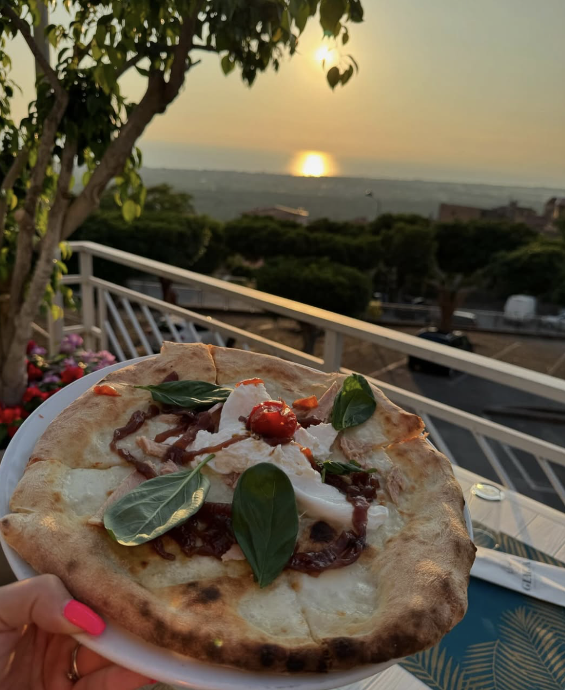
Pilastro II · La Pizza
Cornicione alto e arioso, impasto a lievitazione lunga, cottura nel forno a legna. Sopra, il territorio: Cedro di Diamante IGP, salumi calabresi, cime di rapa, 'Nduja, formaggi locali.
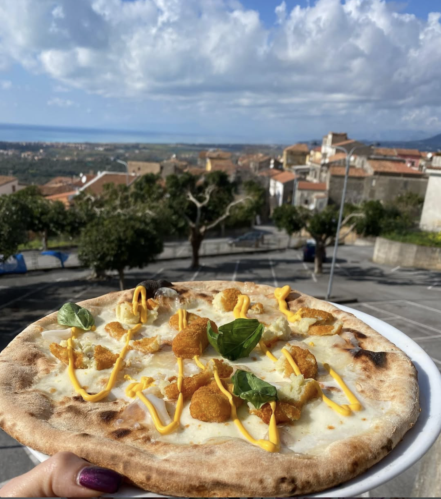
La nostra firma
Pipi e Patane
Peperoni, patate, salsiccia, mozzarella. Il classico calabrese, in versione canotto.
Pilastro III · L'Esperienza
Cala il buio, si accendono le luci e arriva la musica dal vivo: serate con il violino, tra i tavoli. Mise en place curata, fiori, illuminazione calda. Ogni dettaglio è pensato perché tu resti.
7/7
aperti ogni sera
19–24
solo cena
Live
musica · violino
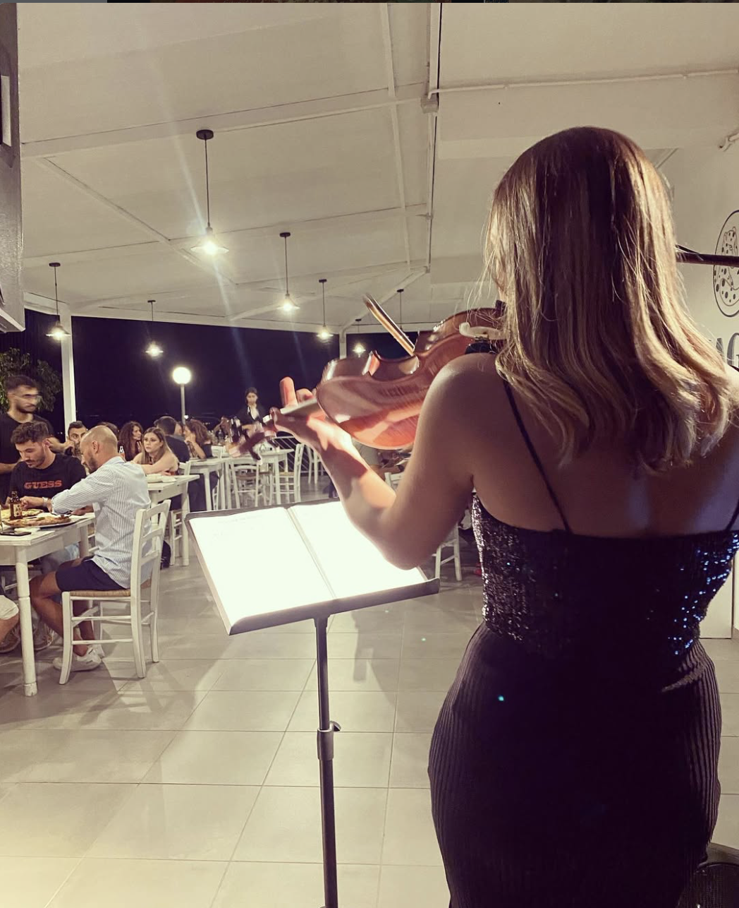
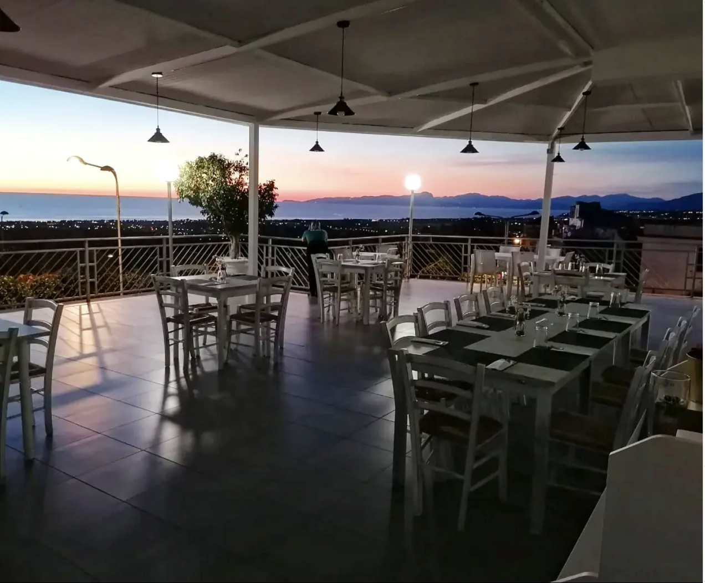
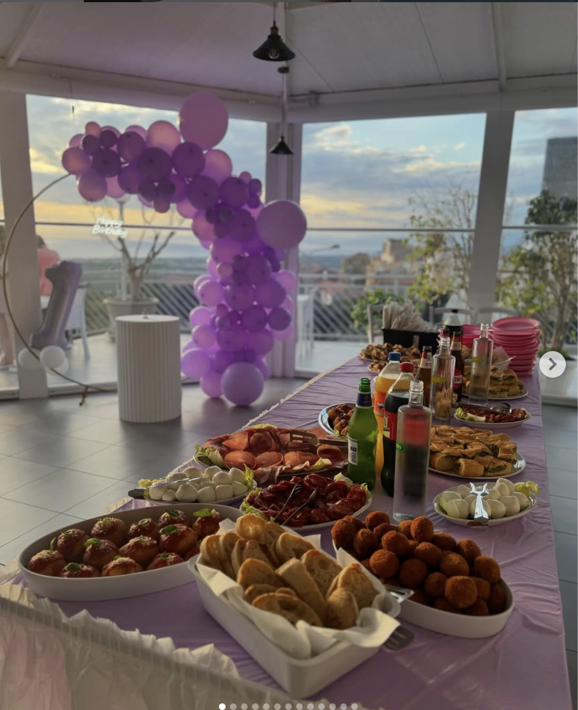
Eventi Privati
La terrazza al tramonto fa il resto. Spazio ampio, vista aperta e una cucina che sa accogliere i numeri grandi. Raccontaci la tua occasione: pensiamo noi al menu.
Richiedi un preventivo via WhatsAppDicono di noi
“Il più bel tramonto sulla Valle del Cedro.”
“Pizza eccellente (parola di napoletano).”
“Cura del dettaglio meticolosa e atmosfera accogliente.”
“Forno a legna, pizza molto buona, sottile ma non troppo, ottimi ingredienti locali.”
“La Pipi e Patane è da provare assolutamente. Patatine fragranti abbinate a una salsiccia deliziosa.”
Visita
Non siamo in centro: ci si sale apposta, e la vista ripaga il viaggio. Parcheggio sul posto.